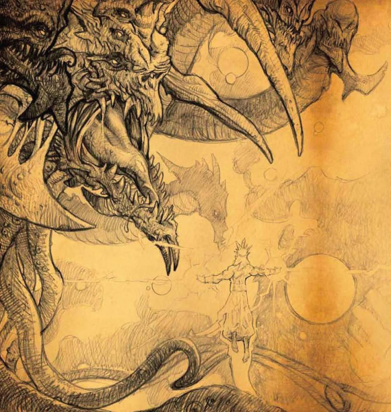
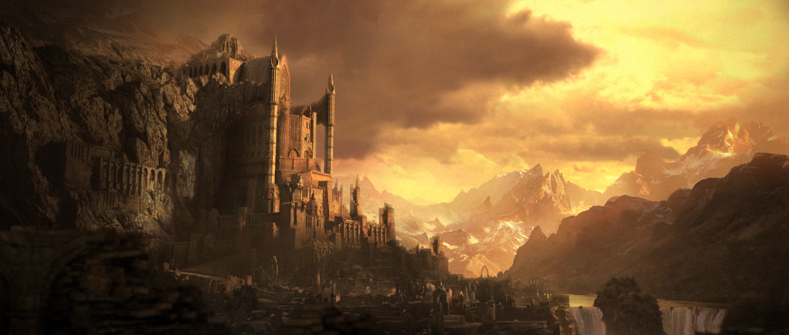
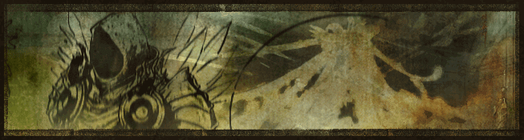
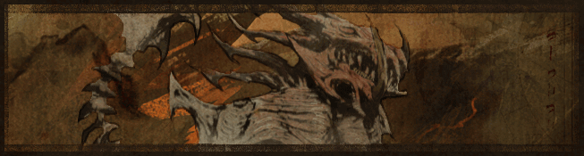
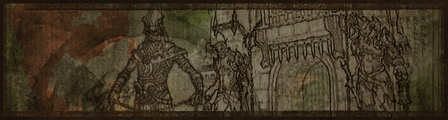
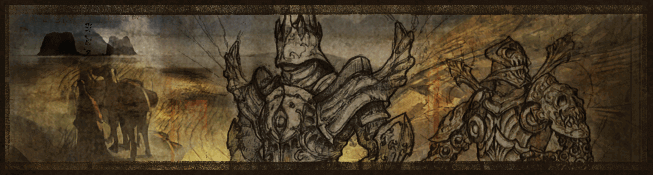
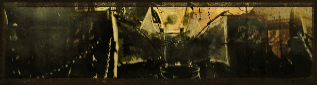

Линията на времето в Diablo вселената е много разпокъсана. Събитията рядко са датирани и дори в случаите, когато те са, информацията е оскъдна и не изразява периода от началото до края на събитието.
Годините са базирани на календарната система Anno Kehjistani, която жителите на Светилището използват за обозначаване на времето.
Сътворението на света - Великият конфликт
Не е ясно кога
Великият Конфликт
Не е ясно кога
Създаването на Светилището
Не е ясно кога
Създаването на цивилизацията
The Sin War
-1809
По-късни събития
Епохата на магьосничеството
-1799
Войните на Магическите Кланове
-210
Епохата на вярата
Хората се обръщат срещу магическите кланове. Някои кланове оцеляват (като Vizjerei), но в намаляла форма. Безброй книжа и история са унищожени. Сформира се Viz-Jaq'taar - група от убийци, които преследват магьосниците на свободна практика. Създават се закони, които забраняват използването на магия. Така идва края на Епохата на магьосничеството и началото на Епохата на вярата. Произлизат нови религии.
0
Мрачното изгнание
Мрачното изгнание се нарича периода, в който трите Основни Злина - Diablo, Mephisto и Baal са заточени в Светилището от останалите четири по-малки Злина в резултат на гражданска война в Ада.
964
Възходът на Zakarum
1025
Реформацията на Zakarum
1150
Инквизицията на Zakarum
1225
Помрачаването на Tristram
- Събитията от Diablo I
1258
Ловът на Тримата
- Събитията от Diablo II
1264
- Събитията от Diablo II: Lord of Destruction
1265
Тихият мир
- Събитията от Diablo Immortal
Края на дните
- Събитията от Diablo III
1285
Царство на враждата
- Събитията от Diablo IV
Годините са базирани на календарната система Anno Kehjistani, която жителите на Светилището използват за обозначаване на времето.
Сътворението на света - Великият конфликт
Не е ясно кога
|
В началото не е съществувало нищо освен Anu - единственото същество на света. Още познат като Диамантения войн. В себе си той съдържал доброто и злото. В един момент решил да изхвърли всички зли части от себе си, за да постигне цялостна чистота – тези части се превърнали в Tathamet - седмоглав дракон изграден от мрак и подлост. Познат е като Основното зло (The Prime Evil). Отделени един от друг, Anu и Tathamet са били хванати в капан на едно място, където воювали помежду си хилядолетия. В крайна сметка, изтощените и равни по сили противници се разрушили взаимно, поставяйки основите на света. Епицентърът на това събитие днес е познато като Pandemonium. |

Anu се бие с Tathamet.
|
{kind=link}
Великият Конфликт
Не е ясно кога
- След смъртта си, от Tathamet произлезли седемте Велики Злина. Всеки от тях бил създаден от главите на Tathamet. От трите основни глави се родили Диабло, Мефисто и Баал, а тялото му било основата на Ада (The Burning Hells).
По подобен начин, гръбнакът на Anu се превърнал в Кристалната Арка (Crystal Arch), където се сформирал Рая (High Heavens). Двата свята създали съответно демоните и ангелите. Окото на Anu се превърнало в Worldstone-а, за който Рая и Ада ще се бият по време на Великия Конфликт - предмет с изключителна сила, способен да създава светове. - Крепостта Pandemonium била построена, за да съхранява Worldstone-а, но и тя, заедно с артефактът, постоянно попада в нови ръце.
- След безкрайно дълъг период, Inarius, Архангелът на Рая, се изморява от Вечния Конфликт и решава да избяга от неспиращата война.
Той намира ангели и демони съмишленици, като най-значителна сред тях е Lilith - дъщерята на единия от трите Злина – Мефисто. Дезертьорите открадват Worldstone-а, за да създадат свой собствен свят, където да се чувстват свободни - така бил създаден света на Светилището.
Създаването на Светилището
Не е ясно кога
- След създаването на Светилището, Inarius и Lilith се съвкупляват и дават живот на Нефалемите. Другите дезертьори ангели и демони правят същото и така били създадени Древните - потомците на човечеството.
- Ангелите и демоните се плашели от силата на Нефалемите и обмисляли унищожаването им. След като Lilith научава за тези планове, изпълнена с ярост, че може да загуби децата си, тя убива всички ангели и демони с изключение на нейния любим Inarius.
- Inarius е потресен от действията на Lilith, но не успява да вземе решението да я убие, затова я прогонва от Светилището във Void-а. Това е място на безкраен мрак, където нищо не се случва. Rathma описва това място като по-лошо от смъртта.
- Inarius изменя силите на Worldstone-а, за да отхлаби силите на Нефалемите с всяко следващо поколение до пълната им загуба. Така произлиза расата на човечеството, която няма и представа за нейното първородство.
Създаването на цивилизацията
- След хилядолетия човечеството започва да заселва света, давайки началото на различни цивилизации.
- Възстановени артефакти индикират, че по това време съществувало писмеността, изкуството и науката била неделима част от човешката култура. Съвременните учени вярват, че този период маркира началото на Kehjan - първата човешка цивилизация.
- Kehjan културата започва да изучава магьосничеството. Това води до основаването и растежа на Mage клановете.
- Растящата сила на клановете води до формирането на Al'Raquish. Тя управлява империята Kehjan.
- Jere Harash призовава първия демон в Светилището. Следователно, Основните злина (Prime Evils - Диабло, Мефисто и Баал) научават за съществуването на Светилището и скритата сила на човечеството.
- Диабло, Мефисто и Баал основават Temple of the Triune, за да разпространяват влиянието и нарастващата им сила.
- В отговор на нарастващата сила на Temple of the Triune, Inarius основава Cathedral of Light.
The Sin War
-1809
- Започва идеологическа битка между Temple of the Triune и Cathedral of Light. Така започва The Sin War.
По-късни събития
- Обикновеният фермер Uldyssian е въвлечен в конфликта, когато Lilith някак си успява да се завърне в Светилището и отключва скритата в него сила на Нефалема. Тя планира да го използва срещу Inarius.
- Uldyssian и неговите последователи отключват скритите сили на хората. Хората с отключени Nephalem сили се наричат Edyrem. Целта им била да сложат край на Temple of the Triune и Cathedral of Light. По време на процеса, Рая научава за съществуването на Светилището и човечеството.
- Temple of the Triune и Cathedral of Light са разрушени. Lilith е заточена обратно във Void-а, а Worldstone-а изменен отново, премахвайки предишните изменения от Inarius, който целеше да блокира пълния потенциал на хората.
- Рая нахлува в Светилището в стремежа си да унищожи човечеството. Ада също нахлува и така започва тристранната битка между Ада, Рая и Edyrem.
- Uldyssian отключва пълния потенциал на Нефалем силите си, ставайки по-могъщ от ангелите и демоните, но осъзнава, че загубва човещината в себе си и решава да се пожертва като успява да избута двете армии обратно в техните царства.
- Angiris Council провежда гласуване дали да спаси Светилището или да го унищожи. Резултатът е 3-2 в полза на Светилището. Tyrael е решаващия вот, като гласува в полза на Светилището след пожертвата на Uldyssian.
- Angiris Council се договарят с Mephisto, че Ада и Рая ще признаят Светилището като отделен свят, а човечеството ще бъде оставено само да реши пътя, по който ще тръгне - Ред или Хаос. За неговото съгласие, Mephisto получава Inarius като роб, който да изтезава цяла вечност.
- Така приключва The Sin War. Малко са тези, които помнят събитията от възстанието на Uldyssian.
Епохата на магьосничеството
-1799
- Вярвайки, че The Sin War е просто сблъсък между вероизповеданията, мнозинството от жителите на Kehjan обръщат гръб на вярата. Преименуват земята си Kehjistan, за да се дистанцират от конфликта.
- Все повече хора се обръщат към Магическите кланове. Така започва епохата на магьосничеството.
- Магьосниците, които пазят спомените си от The Sin War заявяват, че никой магьосник не трябва да призовава демон в света на Светилището. Човечеството трябва да остане независимо от влиянието на ангелите и демоните. Vizjerei, Ennead и Ammuit са доминиращите кланове, които подтискат популярните религии.
- Ureh изчезва от Светилището.

{kind=link}
- Разкрива се, че Vizjerei продължават да практикуват демонология. Това откритие води до серия убийства и политически интриги целящи да свалят Vizjerei от тяхната власт.
- Лидерът на Hand of the Prophet предвижда, че след 1500 ще се създаде конфликт. Той поставя сестринството на групата в магически сън, от който ще се събудят в бъдещето, за да подпомогнат на героите.
Войните на Магическите Кланове
-210
- Напрежението между магическите кланове избухва в кървав конфликт в големите градове на Kehjistan.
- Финалната битка се състои между братята Horazon и Bartuc. Bartuc загива, а града Viz-jun е разрушен. Силата на Магическите кланове е завинаги разбита.
Епохата на вярата
Хората се обръщат срещу магическите кланове. Някои кланове оцеляват (като Vizjerei), но в намаляла форма. Безброй книжа и история са унищожени. Сформира се Viz-Jaq'taar - група от убийци, които преследват магьосниците на свободна практика. Създават се закони, които забраняват използването на магия. Така идва края на Епохата на магьосничеството и началото на Епохата на вярата. Произлизат нови религии.
0
- Първата година на Anno Kehjistani. Датите започват да вървят нагоре.
- Akarat получава видение докато е на посещение в Xiansai и го преписва на ангел на име Yaerius. Получава прозрение за вселената, реалноста и човечеството като възвишена сила. Получава последователи от няколко големи града, които посещава.
- Akarat изчезва в джунглите на Kehjistan. Ученията на Akarat остават своя белег, но евентуално изчезват в следващото хилядолетие.
- Aranoch е опустушен от война.
- Към този момент Нефалемите се предполага, че са изчезнали, но това не е напълно вярно.
- Sarnakyle започва да изучава магията на елементите.
- Демонът Assur е убит от героя Siggard. В продължение на два века Entsteig е необезпокояван от демони.
- Sarnakyle се завръща във Vizjerei клана и им помага да се завърнат към практикуването на магията на елементите.
- След 20 години служене във Vizjerei, Sarnakyle се връща към пътуването. Този път никога не се връща.
- Великият магьосник Ethad създава The Oculus.
- Около този период Siggard изчезва от историята. Оставено е на спекулациите дали е намерил мир или просто се е уморил от войната си с Ада.
- В Stinging Winds се намира руда. Градът Alcarnus е установен като минно-геоложки център за региона.
Мрачното изгнание
Мрачното изгнание се нарича периода, в който трите Основни Злина - Diablo, Mephisto и Baal са заточени в Светилището от останалите четири по-малки Злина в резултат на гражданска война в Ада.
964
- Водени от Lesser Evils (Azmodan, Belial, Andariel, Duriel), голяма част от обитателите на Ада възстават срещу Prime Evils (Baal, Mephisto, Diablo). В резултат на този преврат, тримата братя биват заточени в Светилището.
- Dahlgur предлага на Caldeum достъп до оазис в зона, която преди се е смятала за пустиня. Достъпът до този нов воден източник позволява на Caldeum да се разраства. Единственото условие на Dahlgur било оазиса да носи неговото име. По-късно той изчезва.
- Архангелът Tyrael събира смъртни герои и основава братството наречено Horadrim. Той им връчва камъните на душите и им поставя задачата да проследят и да затворят Основните злина в тях, които сега сеят разруха в Светилището.

{kind=link}
- Mephisto е заловен в близост до джунглите на Kehjistan и затворен в храм на Zakarum в Kurast.
- Baal е проследен в пустинята до Lut Gholein. Tal Rasha, лидерът на Horadrim-a, се жертва, за да го залови в един от камъните на душите.

{kind=link}
- Zakarum започват строежа по Travincal. Това предизвиква интерес към ученията на Zakarum и за няколко месеца, тълпи от изтормозени жители на Kehjistan се стичат да помогнат.
- Според слухове, строежа на Travincal приключва през тази година.
- Diablo най-накрая е заловен от група Horadrim монкове, водени от Jered Cain. Монковете погребват Камъка на Душите, в който е заловен Diablo, в близост до реката Talsande в Khanduras. На мястото е построен Horadric манастир с мрежа от катакомби.
Възходът на Zakarum
1025
- Градът Тристрам е установен около Horadric манастира. В следващите години, градът привлича фермери и заселници от региона.

- Императорът на Kehjistan, Tassara, се присъединява към нарастващата вяра Zakarum, като по този начин печели доверието на жителите и стабилизира региона.
- Столицата на империята се мести в Kurast. Tassara съставя основните вярвания на Zakarum религията и назначава първия патриарх наричан още Que-Hegan. От този момент, записките описват Zakarum като официална религия.
- Въпреки официалното признаване на Zakarum вярата, Tassara продължава да бъде засенчван от неговия приятел от детството и яростен богомолец - Rakkis. След като предотвратява опит за преврат от неверници, Rakkis се превръща в легенда. Използва влиянието си, за да замени държавни служители със Zakarum епископи, което води до дисбаланс на властта в региона.
- Притеснен от растящото влияние на Rakkis, Tassara го изпраща на мисия да разпространи Zakarum вярата на запад. По този начин Tassara успява да си подсигури контрола над Kehjistan.
- Около периода на заминаване на Rakkis, Akkhan сформира Кръстоносците. Изпраща ги на изток със задачата да намерят начин да пречистят Zakarum вярата, тъй като смята, че църквата се е отдалечила от ученията на Akarat.
- След години воюване с хората на север и на запад, Rakkis слага край на пътешествието си и основава Westmarch. Той се провъзгласява за първия крал на новата нация. Малко преди това открива руините на Corvus - древен град на Нефалемите и научава за родословието на човечеството.
- Десетилетие след като става крал, Rakkis продължава търсенето си за силите на Нефалемите. Чувайки за съществуването на Worldstone-а, той се запътва на север, за да завладее Северните степи.
- Манастирът в Тристрам е изоставен.
- Hael пише за съществуването на Corvus. Той заключава, че това е по-скоро символика отколкото истинска местност.
- Хорадримите, вече изпълнили целта си, се изгубват в историята и остават легенда.
- Демонът Xazax, и лоялен слуга на Belial, започва да търси Bartuc.
Реформацията на Zakarum
1150
- Патриарх Zebulon I назначава реформа на Zakarum църквата, приканвайки вярата да се върне в своето първоначално смирено звание. Това решение е добре прието от хората и предизвиква увеличение при независимото преклонение. Архиепископите от Висшия съвет на Zakarum, обаче, смятат тези действия за отслабване на силата и влиянието на църквата.
- Около същия период, църквата изпраща духовници на запад, които да разпространяват вярата. Тежките условия на пътуването води до основаването на реда Protectors of the Word.
- Westmarch е покосен от чума. Крал Justinian II нарежда изгаряне на мъртвите.
- Deckard Cain се ражда.
- Бащата на Deckard Cain умира от болест. Няколко седмици по-късно разваля отношенията с майка си, отказвайки да повярва на нейните истории за Horadrim-ите, че те са просто мит.
- Adria се ражда.
Инквизицията на Zakarum
1225
- Със стъпването на патриарх Karamat в длъжност, Висшия съвет изпълнява целта си да отменят наложените от Zebulon реформи. Karamat е принуден да въведе стриктна система за преклонение, която налага сурови наказания за протестантите. Църквата прехамва множество секти и подтиска други религии като Skatsim. Така започва инквизицията на Zakarum.
- Група Zakarum паладини се отделят от църквата. Откриват Order of Paladins. Бунтовниците потеглят на запад, където водят своята кампания.
Помрачаването на Tristram
- Събитията от Diablo I
1258
- По нареждане на Висшия съвет на Zakarum и настояване на Lazarus, Leoric е изпратен да управлява в земите на Khanduras. Превъзгласява се за цар и превръща отдавна неизползвания Horadric манастир в катедрала на Zakarum.
- При пристигането си в Tristram, архиепископът Lazarus тайно освобождава Diablo, който се опитва да се всели в Leoric, но не успява. Въпреки това, Diablo успява да отнеме здравия му разум с времето. Leoric изпада в лудост.

{kind=link}
- Все по-умопомрачен, Крал Leoric започва да вкарва в затвора всички, които се съмнавят в неговата власт и ги екзекутира като изменници. Декларира война на кралството в Westmarch.
- Под въздействието на Diablo, архиепископът Lazarus отвлича малкия син на Крал Leoric - Принц Albrecht. Diablo се вселява в него.
- Влиянието на Diablo над малкия принц предизвиква появата на множество демони от най-страховитите му кошмари, а най-дълбоките етажи на катедралата са превърнати като сцена от самия ад.
- Lachdanan, капитан от армията на Крал Leoric, се връща от катастрофалната война с Westmarch и е принуден да убие Leoric. Падналия крал проклина Lachdanan и неговите последователи в последния си дъх. Не минава дълго, когато Lachdanan и кралските гвардейци са атакувани от Leoric, съживен като Skeleton King, по време на неговото погребение.
- Архиепископът Lazarus води група селяни в катедралата, за да спаси Albrecht, но накрая ги примамва при кръвожаден касапски демон - The Butcher. Само няколко души оцеляват.

- По-големият син на Leoric, Принц Aidan, се завръща в Tristram. Заедно с неговите съюзници, те навлизат в лабиринтите на катедралата. The Butcher, архиепископът Lazarus и Skeleton King са победени.
- Diablo e победен макар и за сметка на живота на Albrecht. Aidan се опитва да съхрани Diablo в себе си чрез счупения Soulstone. Въпреки благородните си намерения, неговия храбър дух бързо е погълнат от покварата на Diablo.
- Adria отива при Aidan, за да го утеши след тежките събития в лабиринта, но при срещата им тя вижда силата на Diablo в младия войн и му се врича в неговата служба. Съдбата на нейната дъщеря, Leah, е предопределена.
- Aidan се превръща в Мрачния Скитник (The Dark Wanderer), напускайки Tristram малко преди легиони от демони да атакуват и разрушат града и неговите обитатели.
Ловът на Тримата
- Събитията от Diablo II
1264
- Adria ражда Leah. Оставя я в грижите на Gillian в Caldeum и изчезва.
- Norrec Vizharan намира бронята на Bartuc. Нейното проклятие се вселява и поема пълен контрол над него, карайки го да замине на изток.
- Група герои се впускат в мисия, с която целят да победат Diablo и неговите братя. Побеждават Blood Raven, която някога е помогнала на Aidan в лабиринта на Tristram, но сега е покварена от демона Andariel. Отварят портал към Tristram, където спасяват Deckard Cain, а по-късно поразяват и Andariel.
 - Героите заминават в Lut Gholein, където нападат и убиват демоничния лорд Duriel в гробницата на Tal Rasha и освобождават архангелът Tyrael. Разкрива се, че Baal е освободен от неговия soulstone.
- Мрачния Скитник (The Dark Wanderer) завършва трансформацията си в Diablo. Mephisto и покварените последователи на Zakarum духовенството са победени под джунглите на Kurast.
- Героите заминават в Pandemonium Fortress, където побеждават Izual, а после нахлуват и Ада. Diablo е победен и неговия soulstone разрушен.
{kind=link}
- Събитията от Diablo II: Lord of Destruction
1265
- Baal и неговата армия нахлуват в планината Arreat.
 - Героите го последват и го побеждават в последната битка между човечеството и последния от трите Prime Evils, но въпреки това неговата армия продължава нашествието си.
- Tyrael разкрива, че Baal е успял да поквари Worldstone-а, който се помещава в планината Arreat. Осъзнавайки, че той не може да се възстанови, Tyrael го унищожава. В резултат на това се образува експлозия, която унищожава планината, голяма част от околноста, а армията на Baal е опустошена.

- Героите се завръщат по домовете си, след като са победили всички Prime Evils. Cain, знаейки, че след разрушававането на Worldstone-а, Светилището е отново в опастност, започва да търси начин как да спаси смъртния свят.
- Вярата в църквата Zakarum е в упадък след като се разбира за демоничното ѝ влияние. Император Hakan I мести столицата на Kehjistan в Caldeum. През следващите години Caldeum се превръща в най-силния и влиятелен център на Светилището.
{kind=link}
Тихият мир
- С побеждаването на Prime Evils, следващите две десетилетия са сравнително спокойни, но въпреки това времената са тежки за жителите на света.
- През годините търговци и авантюристи са привлечени в руините на Тристрам, след като научават за истории за съкровищата, които се намират в катедралата. Тя бива оглозгана от всички ценности, а градът New Tristram се превръща в синоним на тази практика.
- Събитията от Diablo Immortal
- Demon Hunter-ите се сформират.
- Слугите на Diablo започват да събират фрагментите на Worldstone-а с цел да съживят техния господар.
Края на дните
- Събитията от Diablo III
1285
- Историкът Abd al-Hazir потегля на пътешествие от Caldeum, за да документира чудесата и опастностите на света. Потресен от преживяванията си, той се връща у дома няколко месеца по-късно.
- При конфликт между Tyrael и Imperius, Tyrael се отрича от ангелската си форма. Превръща се в смъртен и слиза в света на Светилището. Приземява се върху старата катедрала като падаща звезда. Енергията от приземяването му събужда мъртвите около New Tristram, включително крал Leoric под формата на Skeleton King (отново), който се зарича да накара всички да страдат така както той е страдал.
- Нефалемите пристигат в New Tristram. С помощта на Leah и Deckard Cain, Skeleton King е победен и Tyrael спасен, но на цената на живота на Cain, който губи живота си от Maghda. Leah и Tyrael отпътуват на изток, за да се справят с Belial.
- Групата пристигат в Caldeum. Проследяват Maghda и вещиците в разрушения град Alcarnus. Отмъщават за смъртта на Cain и освобождават Leah от императорската гвардия, които се оказват слуги на Belial. Спасяват се през каналите на града, където откриват, че Adria - майката на Leah - е жива и я спасяват.
- С помощта на Adria, героите успяват да възстановят Black Soulstone-а от Zoltun Kulle. След като спасяват хората в града от нападението на Belial, те нахлуват в императорския палат и побеждават Belial. Използват Black Soulstone-а, за да го заключат в него.
- Azmodan, последният лорд от ада, разкрива на Leah, че неговата армия ще нападне от кратера в планината Arreat, което кара групата да се запъти на север.
- Армията на Azmodan обсажда Bastion's Keep, но благодарение на героите, атаката е спряна. Впоследствие героите започват да преследват Azmodan, побеждават го и го заключват в Black Soulstone-а.
- Adria разкрива истинската си същност. Използва Black Soulstone-а, за да всели Diablo в нейното тяло. Великите злина сега са едно цяло. Diablo заминава в Рая, а героите го последват.
- Diablo обсажда Рая, но отново героите са решаващия фактор и Diablo бива победен и Рая спасен. Tyrael се връща при своите братя и обявява, че Рая и Светилището трябва да бъдат едно цяло.
- Два месеца по-късно, Tyrael образува нова група от Хорадрими. Тяхната първа мисия е да възстановят Black Soulstone-а. Те се опитват да го скрият в Светилището, но Malthael, ангелът на смъртта, ги спира и го отнема.
- Жътварите на Malthael нападат градът Westmarch. Tyrael и неговите съюзници правят каквото могат, за да защитят населението. Много мъртви биват призовани под демонична форма, а баланса разрушен.
- Malthael е победен, но на цената на Black Soulstone-а. Заключеният дух на Diablo отново е на свобода.
Царство на враждата
- Събитията от Diablo IV
- След последиците от падението на Malthael, човечеството е разгромено от религиозни схеми, война и глад. Рая, също претърпял поражения, затваря портите си към другите светове.
- Десетилетия след падането на Malthael, Светилището бива сведено до мрачен и разрушен ад. Демоните бродят безнаказани, а населението на света се крие в мрака, борейки се за оцеляване.
- Lilith бива призована в смъртния свят. Нейното завръщането води до нови вълни от окултисти и богомолци.